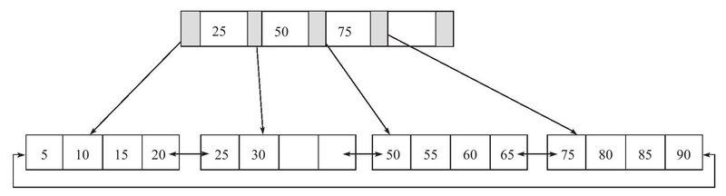
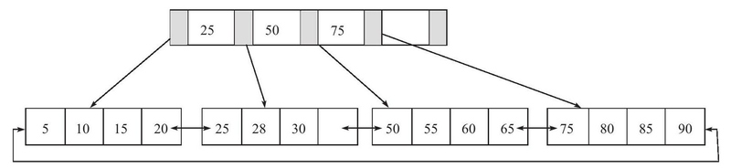
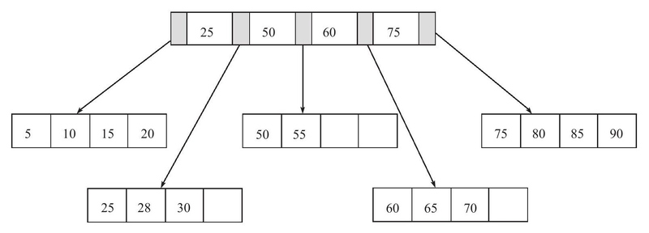
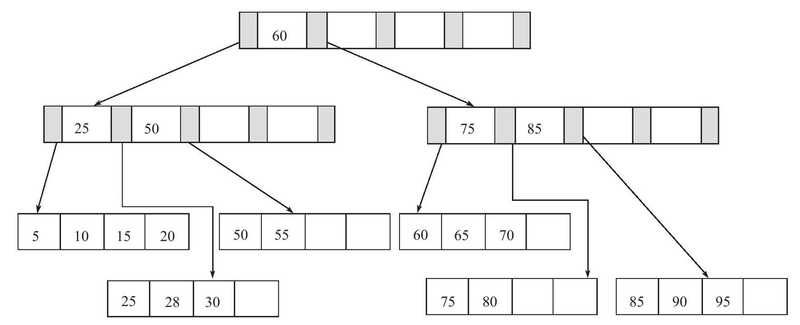
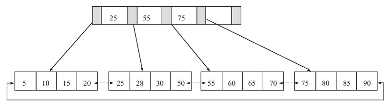
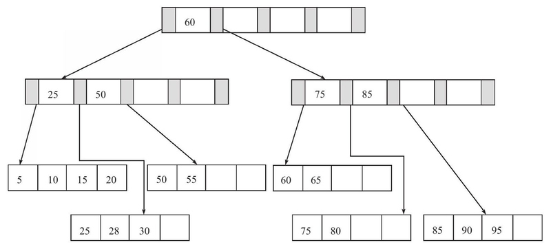
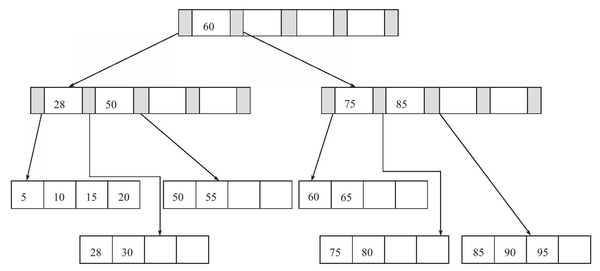
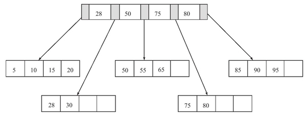
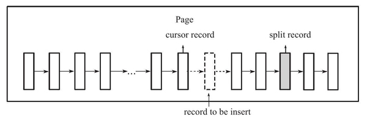

InnoDB中的B树与分裂
Tree
Binary Search Tree
在二叉查找树中，左子树的键值总是小于根的键值，右子树的键值总是大于根的键值。
6
/ \
3 7
/ \ \
2 5 8
利用这棵二叉树对各个节点进行查找，平均查找次数为(1+2+3+3+2+3) / 6 = 2.3次，比起[2，3，5，6，7，8]顺序查找次数(1+2+3+4+5+6) / 6 = 3.3次要少。
二叉查找树还可以这样构建：
2
\
3
\
5
\
6
\
7
\
8
这时查找的平均次数退化为顺序查找次数。
因此如果想高性能地构造一棵二叉查找树，需要这棵二叉查找树是平衡的。
Balance Tree
平衡二叉树符合二叉查找树的定义，并且满足任何节点的两个子树高度最大差为1。
6 6
/ \ / \
3 7 3 8
/ \ \ / \ / \
2 5 8 2 5 7 9
\
9
在插入新节点后，平衡二叉树节点7的左右子树高度差为2，需要通过一次左旋操作来让树重新保持平衡。
但是有的情况可能需要旋转多次才能达到平衡。
2 2 2 4
/ \ / \ / \ / \
1 5 1 5 1 4 2 5
/ \ / \ / \ / \ \
4 9 4 9 3 5 1 3 9
/ \
3 9
除了插入操作，还有更新和删除操作都会导致平衡树需要进行旋转。因此维护一棵平衡树是有一定开销的。
B+ Tree
B+树是：
- 一棵n叉树(m-ary)
- 记录节点按照键值大小顺序存放在同一层叶子节点上，各叶子节点指针进行连接
B+ Tree插入操作
- Leaf Page未满、Index Page未满时，直接将记录插入到叶子节点
- Leaf Page满、Index Page未满时，拆分Leaf Page，将中间的节点（指的是Leaf Page几个节点的中间）放入到Index Page中，小于中间节点的记录放左边，大于中间节点的记录放右边
- Leaf Page满、Index Page满时，拆分Leaf Page，小于中间节点的记录放左边，大于中间节点的记录放右边；拆分Index Page，原理同上，此时树的高度+1
B+ Tree删除操作
- Leaf Page大于填充因子、Index Page大于填充因子，直接删除，如果该节点是Index Page节点，用该节点的右节点代替
- Leaf Page小于填充因子、Index Page大于填充因子，合并Leaf Page和它的兄弟节点，同时更新Index Page
- Leaf Page小于填充因子、Index Page小于填充因子，合并Leaf Page和它的兄弟节点，更新Index Page，合并Index Page和它的兄弟节点
示例
一棵高度为2，扇出值为5的B+树：

插入键值28，Leaf Page和Index Page都没满，直接插入：

插入键值70发现Leaf Page已满，这时页的键为[50, 55, 60, 65, 70]，中间值为60，则根据60来拆分叶子节点，并且将60放入Index Page中：

插入键值95，此时Leaf Page和Index Page都已满，Leaf Page为[75, 80, 85, 90, 95]，按照85拆分，并将85放入Index Page；Index Page为[25, 50, 60, 75, 85]，按照60拆分，并将60放入新的Index Page：

Rotation操作，Leaf Page已满但是左右兄弟节点没有满的情况下，不急于做拆分页的操作，将记录移到所在页的兄弟节点上。插入键值70时因为左Leaf Page未满，进行Rotation，50被Rotate到左页，55被Rotate上Index Page：

删除键值70，删除后Fill Factor大于50%，直接删除：

删除键值25，直接删除，但是25还是Index Page中的值，因此要将右侧键值28更新到Index Page：

删除键值60，删除后Fill Factor小于50%，发生合并操作，所在Leaf Page与左侧合并，并且更新Index Page，树高度降低：

B+ Tree索引
B+树索引是B+树中数据库中的实现，具有高扇出性(fanout)，通常扇出值在100以上。
B+树索引的节点在逻辑上是顺序存储的，但是在物理上因为分裂和合并的缘故，并不一定是连续的。从根节点开始向下查找每次都是随机IO。B+树因为高扇出性，高度一般在2-4层，也就是说从根节点开始查找到对应的叶子节点最多需要2-4次随机IO。又由于B+树索引的上层是常驻内存的，因此通常只需要更少次的随机IO即可定位到目标的叶子节点。
页是B+树索引磁盘管理的最小单位，在查询某行数据时，需要加载行所在的页到缓冲区再在页内Fetch目标行。
B+ Tree索引的分裂
考虑以下情况，如果页内存储的键值为[1, 2, 3, 4, 5, 6, 7, 8]，如果新增键值9时页满需要发生分裂，按照之前介绍的分裂方法，取5为分裂点，页分裂成[1, 2, 3, 4]和[5, 6, 7, 8, 9]两个页。如果后续的写入操作均为顺序写入，那么页[1, 2, 3, 4]就会永远填充不满，剩余的页同理，因此会导致页空间的浪费。
所以，B+树索引的分裂并不总是从页的中间记录开始。在InnoDB引擎的Page Header中，有以下部分用来保存插入的顺序信息：
PAGE_LAST_INSERT，记录上一次写入位置的指针PAGE_DIRECTION， 值为PAGE_LEFT、PAGE_RIGHT和PAGE_NO_DIRECTION之一PAGE_N_DIRECTION，表示连续向同一方向插入的数量
通过这些信息，InnoDB引擎可以决定要向左还是向右分裂，分裂点记录为哪一个：
- 在随机插入的情况下，取页中间记录作为分裂点的记录
- 在定位到插入记录的位置后，如果已经向同一方向插入记录数量为5，并且当前位置后还有3条记录，则分裂点的记录定位到当前位置后到第三条记录，否则分裂点就是当前待插入的记录
向右分裂的示例：

B+ Tree索引的管理
通过show index命令可以查看表的索引情况：
mysql> show index from a_real_secret_table_for_testing_000087\G
*************************** 1. row ***************************
Table: a_real_secret_table_for_testing_000087 -- 索引所在表名
Non_unique: 0 -- 是否唯一
Key_name: PRIMARY -- 索引名
Seq_in_index: 1 -- 该列在索引中的顺序
Column_name: id -- 列名
Collation: A -- 列以什么方式存储在索引中，A：排序的
Cardinality: 1637220 -- 索引中唯一值的数目的估计值
Sub_part: NULL -- 是否是列的部分被索引，如100即该列前100字符被索引
Packed: NULL -- 关键字如何被压缩
Null: -- 是否索引列含有NULL值
Index_type: BTREE -- 索引类型，InnoDB均为BTREE
Comment:
Index_comment:
Cardinality值
Cardinality值与表的行数比应该尽可能接近1，否则说明这个索引列选择性小，可能需要考虑是否删除此索引，例如在用户表中的性别等。
Cardinality值非常关键，优化器会根据这个值来判断是否使用这个索引。它代表索引中唯一值的数目的估计值，因此真实值在每次INSERT、UPDATE、DELETE操作时都会改变，InnoDB不可能在每次写操作时都更新该值，因为这样做代价太大了，所以Cardinality是一个估计值，如果需要更新Cardinality信息，可以使用ANALYZE TABLE命令。
在InnoDB中，更新Cardinality值的策略为：
- 表中1/16的数据已经发生过变化
- stat_modified_counter > 2,000,000,000
在满足更新条件的情况下，InnoDB通过采样的方法统计Cardinality值：
- 取得B+树索引中叶子节点的数量，记为P
- 随机取所有叶子节点中的8（默认，
innodb_stats_sample_pages配置）个叶子节点，统计每个页不同值的个数，记为N0, N1, … ,N7 - Cardinality预估值 = (N0 + N1 + … + N7) / 8 * P
因此，Cardinality不是一个精确值，同时，即使没有数据改动，每次统计得到的值也可能会不同。
Online Schema Change
在MySQL 5.5版本前，对索引的增删改这类DDL操作，MySQL的操作过程为：
- 创建一张新的临时表，表结构为
ALTER命令定义的新结构 - 将原表数据导入临时表
- 删除原表
- 临时表重命名为原表
这意味着在对大表的索引进行添加删除操作时会需要很长时间，并且服务会对其他事务不可用。
Facebook用PHP脚本实现OSC：
- init，验证表的主键、触发器、外键等是否满足
- createCopyTable，创建和原始表结构一样的新表
- alterCopyTable，对新表进行
ALTER操作，如添加索引或列 - createDeltasTable，创建
deltas表 - createTriggers，对原表创建
INSERT、UPDATE、DELETE操作对触发器，触发操作产生的记录会被写到deltas表 - startSnpshotXact，开始OSC操作的事务
- seletTableIntoOutfile，将原表中的数据写入外部文件
- dropNCIndexs，导入数据到新表前，删除新表中的所有辅助索引
- loadCopyTable，将导出的文件导入到新表
- replayChanges，将OSC过程中原表的DML操作（保存在
deltas表）的记录应用到新表中 - recreateNCIndexes，重新创建辅助索引
- replayChanges，再次进行DML日志的回放操作，这些操作是在重建辅助索引时产生的
- swapTables，原子的
RENAME操作互换新旧表名
与页和B+ Tree相关的查询Case
示例的查询会使用索引吗 / 会使用哪个索引 / 为什么？
-- Table Schema
create table t (
id int not null auto_increment comment "unique id",
a int not null default 0 comment "column a",
b varchar(255) not null default "" comment "column b",
c int not null default 0 comment "column c",
primary key (id),
key idx_a(a),
key idx_a_b(a, b)
) comment "test table for index decision";
-- Table record count
mysql> select count(*) from t;
+----------+
| count(*) |
+----------+
| 500000 |
+----------+
1 row in set (0.02 sec)
-- Table data sample
mysql> select * from t limit 10;
+----+----------+--------------------------------------------------------------+----------+
| id | a | b | c |
+----+----------+--------------------------------------------------------------+----------+
| 1 | 74050441 | | 83633927 |
| 2 | 74330977 | JayiceJayiceJayiceJayiceJayiceJayiceJayiceJayiceJayiceJayice | 1986453 |
| 3 | 90869050 | JayiceJayiceJayice | 13026881 |
| 4 | 6235189 | JayiceJayiceJayiceJayiceJayiceJayiceJayice | 6147585 |
| 5 | 29282553 | JayiceJayiceJayiceJayice | 51497909 |
| 6 | 30223437 | JayiceJayiceJayice | 28159699 |
| 7 | 37207514 | | 71102047 |
| 8 | 76961456 | JayiceJayiceJayiceJayiceJayiceJayice | 17116481 |
| 9 | 87737033 | | 70935248 |
| 10 | 67230439 | Jayice | 99513787 |
+----+----------+--------------------------------------------------------------+----------+
10 rows in set (0.01 sec)
-- Query
explain select * from t where a > ???;
explain select a from t where b > ???;